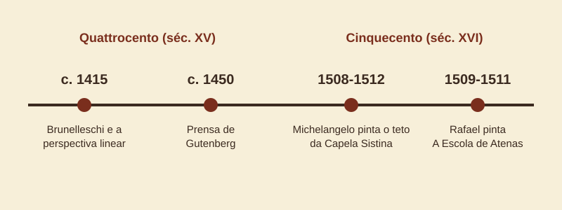
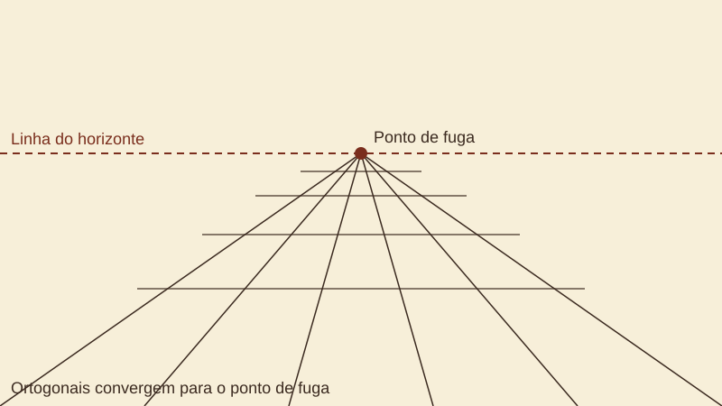
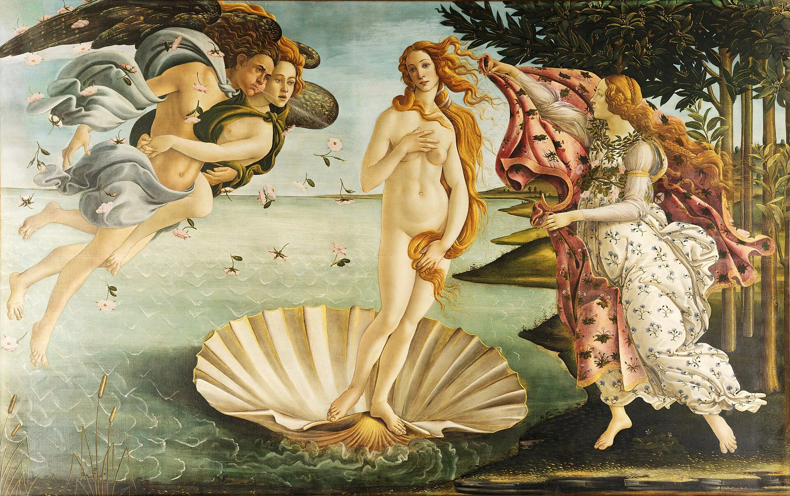
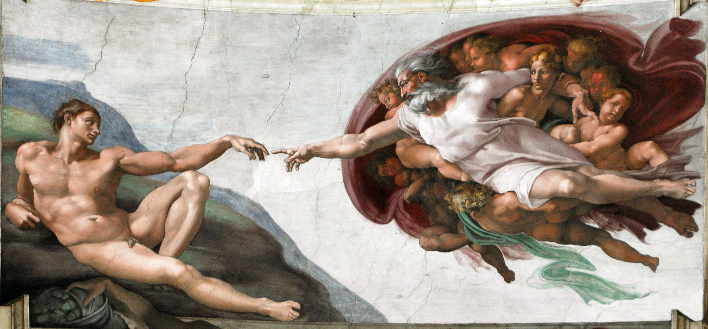
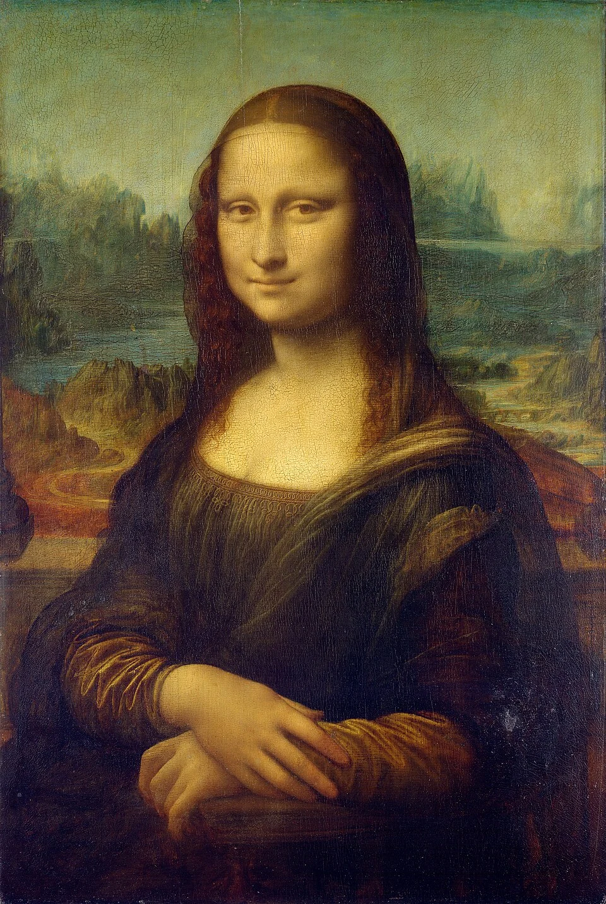
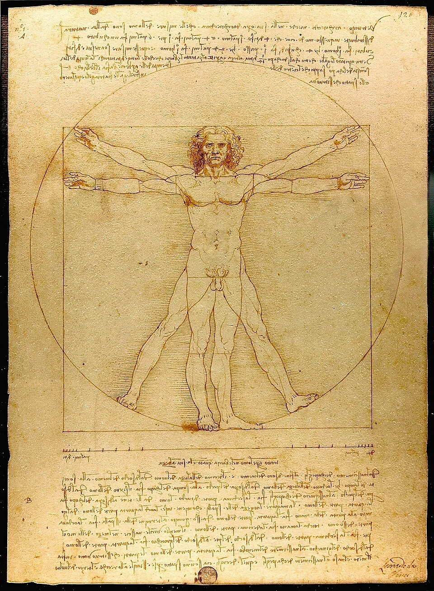

A arte do Renascimento
Entre os séculos XIV e XVI, a Europa viveu uma transformação cultural que mudou para sempre a maneira de ver, pintar e pensar o mundo.
O que foi o Renascimento?
O Renascimento foi um movimento cultural, artístico e científico que surgiu na Itália, principalmente na cidade de Florença, e depois se espalhou por toda a Europa. O nome vem da ideia de “renascer”: os artistas e pensadores da época queriam retomar valores da Antiguidade clássica, isto é, da Grécia e de Roma, que valorizavam a harmonia, a proporção e o equilíbrio.
Esse período é marcado pelo humanismo, corrente de pensamento que coloca o ser humano e sua capacidade de conhecer o mundo no centro das atenções. Por isso, a arte renascentista dá tanta importância ao corpo humano, à observação da natureza e ao estudo da anatomia.
Por que na Itália?
As cidades italianas, como Florença, Veneza e Milão, enriqueceram com o comércio e as atividades bancárias. Famílias ricas e poderosas, como os Médici, em Florença, e também a Igreja passaram a financiar artistas, prática chamada de mecenato. Além disso, a Itália guardava ruínas e obras da Roma antiga, que serviam de inspiração e de objeto de estudo.

As duas grandes fases
Quattrocento (século XV)
É a fase de experimentação. Artistas como Filippo Brunelleschi, Masaccio e Sandro Botticelli investigaram como representar o espaço de forma convincente. Brunelleschi, que também foi arquiteto e projetou a cúpula da catedral de Florença, é associado à formulação da perspectiva linear, por volta de 1415. Em 1435, o humanista Leon Battista Alberti descreveu o método no tratado Da Pintura.
Cinquecento (século XVI)
Também chamado de Alta Renascença, é o momento de maior maturidade do estilo, com Leonardo da Vinci, Michelangelo e Rafael. As composições ficam equilibradas e monumentais, e o domínio do desenho, da luz e da anatomia chega a um nível muito elevado. O centro artístico se desloca de Florença para Roma e, em seguida, também para Veneza.
A invenção da perspectiva
Na perspectiva linear, todas as linhas paralelas que se afastam do observador parecem convergir para um mesmo ponto no horizonte, chamado ponto de fuga. Usando esse recurso, os pintores passaram a criar a ilusão de profundidade em uma superfície plana, como uma parede ou uma tela.

A obra A Escola de Atenas, de Rafael, pintada em 1509–1511 no Vaticano, é um dos exemplos mais famosos: os arcos do cenário conduzem o olhar do espectador para o fundo da cena, onde estão os filósofos Platão e Aristóteles.
Outras inovações
Além da perspectiva, os artistas desenvolveram novos recursos. O sfumato, usado por Leonardo da Vinci, cria transições suaves entre luz e sombra, sem contornos duros. O claro-escuro (chiaroscuro) usa o contraste entre áreas iluminadas e escuras para dar volume às figuras. A pintura a óleo, que se difundiu principalmente a partir do século XV, permitiu cores mais ricas, camadas translúcidas e maior riqueza de detalhes do que a têmpera usada antes.
A circulação de ideias também foi acelerada pela imprensa de tipos móveis, aperfeiçoada por Johannes Gutenberg por volta de 1450. Livros e gravuras passaram a circular com mais facilidade, ajudando a difundir o conhecimento artístico e científico.
Por que ele ainda importa?
Muitas das ideias do Renascimento seguem presentes até hoje: a busca por representar o mundo de modo realista, o interesse pela ciência e pela observação e a valorização do artista como autor, e não apenas como artesão. Entender esse período ajuda a compreender como nossa maneira de olhar imagens foi construída.
Galeria de obras
Quatro obras de grande importância do período. As imagens originais são de domínio público e vêm do Wikimedia Commons.
-

O Nascimento de Vênus
Sandro Botticelli, c. 1484–1486. Têmpera sobre tela. -

A Criação de Adão
Michelangelo, c. 1511. Afresco no teto da Capela Sistina. -

Mona Lisa
Leonardo da Vinci, c. 1503–1519. Óleo sobre madeira. -

O Homem Vitruviano
Leonardo da Vinci, c. 1490. Desenho a tinta.
Referências
- GOMBRICH, E. H. A história da arte. Rio de Janeiro: LTC.
- ENCYCLOPAEDIA BRITANNICA. Renaissance. Disponível em: britannica.com/event/Renaissance.
- SMARTHISTORY. The Renaissance in Italy. Disponível em: smarthistory.org.
- Figuras da Galeria. Disponível em: wikipedia.org
- Textos e ilustrações das figuras 1 e 2: produção própria do autor da página.